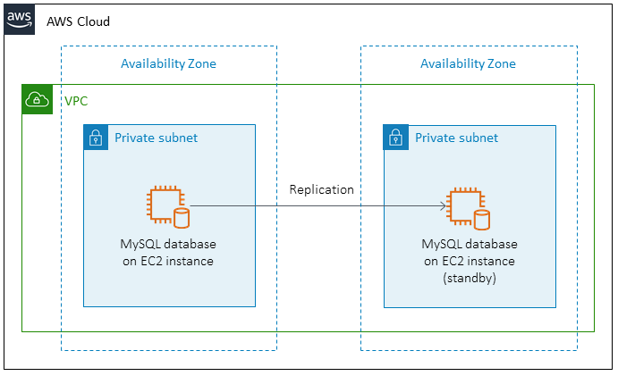

MySQL is a widely used relational database management system (RDBMS) that is used to manage and store data. Here are some of the common uses of MySQL:
MySQL is a robust and reliable database system that can handle large amounts of data and complex transactions. It is also open source and has a large community of developers, which means it is constantly being improved and updated with new features and enhancements.

$ yum list installed | grep mysql
$ yum install mysql-community-server -y
$ dpkg -l | grep mysql
$ apt update
$ sudo apt install mysql-server -y
Path: /usr/share/man/man1/mysql.1.gz
Path: /etc/my.cnf
Path: /usr/bin/mysql /usr/lib64/mysql
Path: /usr/lib/systemd/system/mysqld.service
To Enable a Service at boot level:
$ systemctl enable mysql
To check a Service status:
$ systemctl status mysql
To Start a Service:
$ systemctl start mysql
To Restart a Service:
$ systemctl restart mysql
$ netstat -tulpn | grep LISTEN
$ sudo ss -tap | grep mysql
$ cat /etc/services | grep -w '3306/tcp'
For root user, the password is available in the log file:
$ cat /var/log/mysqld.log
$ cat /var/log/mysqld.log | grep "A Temporary password"
$ mysql -u root -p
$ mysql -u root -p
CREATE USER 'newuser'@'localhost' IDENTIFIED BY 'password';
CREATE USER 'tom'@'%' IDENTIFIED BY 'Redhat@123456';
GRANT ALL PRIVILEGES ON *.* TO 'newuser'@'localhost';
GRANT ALL PRIVILEGES ON *.* TO 'tom'@'%';
FLUSH PRIVILEGES;
That's it! You have now created a new user in MySQL and granted that user full permissions. The new user can now connect to the MySQL server and perform any operation on any database and table.
CREATE SCHEMA my_schema;
CREATE SCHEMA cloudbinary;
CREATE TABLE my_schema.users (
id INT NOT NULL AUTO_INCREMENT,
name VARCHAR(50) NOT NULL,
email VARCHAR(50) NOT NULL,
PRIMARY KEY (id)
);
CREATE TABLE cloudbinary.students (
id INT NOT NULL AUTO_INCREMENT,
name VARCHAR(50) NOT NULL,
email VARCHAR(50) NOT NULL,
PRIMARY KEY (id)
);
INSERT INTO my_schema.users (name, email) VALUES
('John Doe', 'john.doe@example.com'),
('Jane Smith', 'jane.smith@example.com'),
('Bob Johnson', 'bob.johnson@example.com');
INSERT INTO cloudbinary.students (name, email) VALUES
('John Doe', 'john.doe@example.com'),
('Jane Smith', 'jane.smith@example.com'),
('Bob Johnson', 'bob.johnson@example.com');
UPDATE my_schema.users SET name = 'John Smith' WHERE id = 1;
SELECT * FROM my_schema.users;
SELECT name, email FROM my_schema.users;